Momentum Schedules
Module 3
1 Can an Algorithm Change a Scaling Law?
Module 1 began with an empirical structure: covariance eigenvalues in data and neural representations often decay approximately as a power law. Module 2 put that structure into the power-law random features model and derived learning curves and compute-optimal scaling laws. We now close the loop:
- observe a structure in real problems;
- build a solvable model of that structure;
- use the model to design an optimizer; and
- transport the design principle back to transformer training.
The question is more precise than whether one optimizer obtains a lower loss than another:
Can an optimizer change the exponent of a compute-optimal scaling law, or can it only improve the multiplicative constant?
Suppose algorithms \(A\) and \(B\) have compute-optimal losses
\[ \mathcal L_{\star,A}(\mathsf C) \asymp c_A\mathsf C^{-\eta_A}, \qquad \mathcal L_{\star,B}(\mathsf C) \asymp c_B\mathsf C^{-\eta_B}. \]
Algorithm \(A\) outscales \(B\) if \(\eta_A>\eta_B\). A smaller constant \(c_A\) is still valuable, but it is a vertical improvement rather than a change in slope. This distinction is hard to establish from a finite compute range: a crossover between two terms can look like a new exponent, and an improvement that grows for several model sizes can eventually saturate.
The first half of this module asks the question in the same solvable model as Module 2. There, dimension-adapted Nesterov acceleration (DANA) provides a positive answer: an algorithm can provably outscale SGD on part of the phase diagram (Ferbach et al. 2025). The second half asks what survives when the idea is moved into an AdamW-like optimizer and tested on a transformer scaling ladder. The empirical answer will be more cautious.
2 Memory Is the Control
Let \(g_{t+1}\) be a stochastic gradient. A common momentum variable is the exponential moving average
\[ m_{t+1}=\beta m_t+(1-\beta)g_{t+1}. \]
Unrolling the recursion gives
\[ m_{t+1} =(1-\beta)\sum_{s=0}^{t}\beta^{t-s}g_{s+1}. \]
The weight of a gradient decays on the time scale
\[ \tau_{\mathrm{mem}}\asymp \frac{1}{1-\beta}. \]
For the familiar choice \(\beta=0.9\), this horizon is of order ten steps. For \(\beta=0.99\), it is of order one hundred. The horizon does not grow when the model is made larger or trained longer. Classical stochastic momentum therefore has short memory on the scale of a long training run.
This does not make constant momentum useless. It can improve stability, transients, and constants. The stronger statement is specific to scaling: on the PLRF model, classical constant momentum has the same loss and compute-optimal exponents as SGD. After rescaling the effective learning rate, the leading risk dynamics agree.
Classical stochastic momentum can beat SGD at fixed scale without outscaling SGD. A finite-memory filter changes constants but does not create a new asymptotic clock.
To change the exponent, we need an algorithmic time scale that grows with the training problem.
3 Nesterov Momentum
Nesterov acceleration is first of all a deterministic, full-gradient acceleration scheme. Its classical guarantee assumes that the optimizer can evaluate \(\nabla L\) itself, rather than a noisy gradient from a randomly sampled example or mini-batch. For a smooth convex objective \(L\), one standard two-sequence form is
\[ \begin{aligned} \theta_{t+1} &=y_t-\gamma\nabla L(y_t),\\ y_{t+1} &=\theta_{t+1}+\mu_t(\theta_{t+1}-\theta_t), \end{aligned} \]
where, for example,
\[ \mu_t=\frac{t}{t+3}=1-\frac{3}{t+3}. \]
Unlike constant momentum, \(1-\mu_t\asymp t^{-1}\). Its effective memory horizon grows proportionally to the current time. The algorithm has no fixed memory scale. In deterministic convex optimization, this growing memory is part of the mechanism that accelerates the objective decay relative to ordinary gradient descent.
The formulas in this section describe classical full-gradient Nesterov acceleration. A naive stochastic version replaces
\[ \nabla L(y_t) \quad\text{by}\quad g_{t+1}=\nabla\ell(y_t;\xi_{t+1}), \qquad \mathbb E[g_{t+1}\mid y_t]=\nabla L(y_t). \]
That substitution preserves the algebraic forms below, but not the deterministic stability or acceleration guarantee. Because the memory horizon grows with \(t\), the momentum variable also accumulates stochastic-gradient noise. In the small-batch PLRF setting studied here, undamped stochastic Nesterov is unstable. DANA is introduced precisely to recover stability by damping the long-memory contribution.
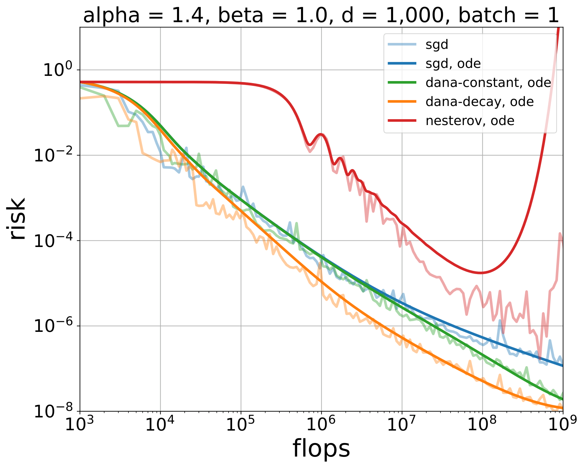
3.1 The look-ahead form
Define the velocity \(v_{t+1}=\theta_{t+1}-\theta_t\). Since \(y_t=\theta_t+\mu_{t-1}v_t\), the same iteration becomes
\[ \begin{aligned} v_{t+1} &=\mu_{t-1}v_t -\gamma\nabla L(\theta_t+\mu_{t-1}v_t),\\ \theta_{t+1} &=\theta_t+v_{t+1}. \end{aligned} \]
The gradient is evaluated at a point extrapolated in the direction of the current velocity. This is the familiar look-ahead interpretation.
The same deterministic full-gradient iteration can be represented in several coordinate systems. We begin with three exactly equivalent formulations. Only after establishing their relationship will we introduce the fourth, EMA-like view. Replacing the displayed full gradients by stochastic gradients defines a naive stochastic analogue, not a stable acceleration theorem.
Two sequences
State: \((\theta_t,y_t)\)
\[ \begin{aligned} \theta_{t+1}&=y_t-\gamma\nabla L(y_t),\\ y_{t+1}&=\theta_{t+1} +\mu_t(\theta_{t+1}-\theta_t). \end{aligned} \]
Take a gradient step, then extrapolate.
Look ahead
State: \((\theta_t,v_t)\)
\[ \begin{aligned} v_{t+1}&=\mu_{t-1}v_t -\gamma\nabla L(\theta_t+\mu_{t-1}v_t),\\ \theta_{t+1}&=\theta_t+v_{t+1}. \end{aligned} \]
Evaluate the gradient at the extrapolated point.
Extra gradient
State: \((\Phi_t,m_t)\)
\[ \begin{aligned} g_{t+1}&=\nabla L(\Phi_t),\\ m_{t+1}&=\mu_{t-1}m_t+g_{t+1},\\ \Phi_{t+1}&=\Phi_t-\gamma (g_{t+1}+\mu_t m_{t+1}). \end{aligned} \]
Separate the fresh gradient from accumulated memory.
The exact relationship between the first three views.
Define
\[ \begin{aligned} v_t&=\theta_t-\theta_{t-1},\\ \Phi_t&=y_t=\theta_t+\mu_{t-1}v_t,\\ m_t&=-v_t/\gamma, \qquad g_{t+1}=\nabla L(\Phi_t). \end{aligned} \]
Substituting these identities into the two-sequence iteration gives exactly
\[ \begin{aligned} m_{t+1} &=\mu_{t-1}m_t+g_{t+1},\\ \Phi_{t+1} &=\Phi_t-\gamma\bigl(g_{t+1}+\mu_t m_{t+1}\bigr). \end{aligned} \]
Thus the two-sequence, look-ahead, and extra-gradient blocks describe the same algorithm in different coordinates. The extra-gradient coordinates are useful because they display the fresh gradient and accumulated memory separately.
The fourth view: normalized EMA memory.
The EMA form is different in status. It is obtained by normalizing the exact extra-gradient accumulator and then making a slowly-varying-schedule approximation.
EMA form
State: \((\Phi_t,p_t)\)
\[ \begin{aligned} p_{t+1} &\approx\mu_{t-1}p_t+(1-\mu_{t-1})g_{t+1},\\ \Phi_{t+1} &=\Phi_t-\gamma\left( g_{t+1}+\frac{\mu_t}{1-\mu_{t-1}}p_{t+1} \right). \end{aligned} \]
Normalize the memory to look like Adam’s first moment. The first line is a slowly-varying-schedule approximation, not another exact change of variables.
To make the accumulator resemble an exponential moving average, normalize it by its current innovation weight:
\[ p_{t+1}=(1-\mu_{t-1})m_{t+1}. \]
The parameter update then becomes exactly
\[ \Phi_{t+1} =\Phi_t-\gamma\left( g_{t+1} +\frac{\mu_t}{1-\mu_{t-1}}p_{t+1} \right). \]
Because the normalization changes with time, the exact recursion for \(p_t\) is
\[ p_{t+1} = \mu_{t-1} \frac{1-\mu_{t-1}}{1-\mu_{t-2}}p_t +(1-\mu_{t-1})g_{t+1}. \]
For constant momentum, the ratio is exactly one. For a slowly varying Nesterov schedule,
\[ \frac{1-\mu_{t-1}}{1-\mu_{t-2}}\approx1, \]
which gives the familiar EMA approximation
\[ p_{t+1} \approx \mu_{t-1}p_t+(1-\mu_{t-1})g_{t+1}. \]
For \(\mu_t=t/(t+3)\), the ratio approaches one as \(t\) grows, but it is not identically one.
The extra-gradient form remains the most convenient starting point for DANA because it exposes separate coefficients for the fresh gradient and the accumulated momentum without making the EMA approximation.
3.2 The ODE viewpoint
Nesterov acceleration also has a continuous-time interpretation. Under an appropriate small-step limit, the iterates are described by a second-order equation of the schematic form
\[ \ddot\theta(t)+\frac{c}{t}\dot\theta(t)+\nabla L(\theta(t))=0. \]
The damping decreases like \(1/t\). This ODE viewpoint explains why a time-dependent momentum coefficient is not an arbitrary schedule: it is the discrete counterpart of a damping law whose clock expands with time (Su et al. 2016).
The useful continuum object is not only the mean iterate. On a quadratic, the loss is a second moment, and momentum introduces a cross-moment. Those quantities form a closed three-variable system.
Fix an eigenvector of the PLRF Hessian with eigenvalue \(\lambda\). Let \(x_k\) be the parameter error and \(y_k\) the momentum in this direction. A schematic one-step version of the paper’s general momentum algorithm is
\[ \begin{aligned} y_{k+1}-y_k &= -\Delta_k y_k+\gamma_{1,k}B\lambda x_k +\gamma_{1,k}\varepsilon^{(y)}_{k+1},\\ x_{k+1}-x_k &= -\gamma_{2,k}B\lambda x_k-\gamma_{3,k}y_k +\gamma_{2,k}\varepsilon^{(x)}_{k+1}. \end{aligned} \]
The noises have conditional mean zero. In the PLRF model their leading conditional variance in this mode is proportional to \(B\lambda\mathscr P_k\), where \(\mathscr P_k\) is the total population loss. Now introduce
\[ \rho_k^2=\mathbb E[x_k^2], \qquad \xi_k^2=\mathbb E[y_k^2], \qquad \chi_k=\mathbb E[x_ky_k]. \]
Expand, for example,
\[ x_{k+1}^2-x_k^2 =2x_k(x_{k+1}-x_k)+(x_{k+1}-x_k)^2, \]
and do the same for \(y_k^2\) and \(x_ky_k\). Replacing first differences by time derivatives and retaining the leading drift and quadratic-variation terms gives the paper’s simplified three-variable closure:
\[ \frac{d}{dt} \begin{pmatrix} \rho^2\\ \xi^2\\ \chi \end{pmatrix} = \begin{pmatrix} -2\gamma_2B\lambda & 0 & -2\gamma_3\\ 0 & -2\Delta & 2\gamma_1B\lambda\\ \gamma_1B\lambda & -\gamma_3 & -(\Delta+\gamma_2B\lambda) \end{pmatrix} \begin{pmatrix} \rho^2\\ \xi^2\\ \chi \end{pmatrix} + B\lambda\mathscr P(t) \begin{pmatrix} \gamma_2^2\\ \gamma_1^2\\ 0 \end{pmatrix}. \]
This formula separates the two effects cleanly. The matrix is the deterministic transport of error and momentum. The final vector is stochastic variance injected by fresh examples. Summing \(\lambda\rho_\lambda^2(t)\) over the spectrum recovers the population loss and couples all modes through \(\mathscr P(t)\); solving that coupled system is what produces the Volterra equation later in the module.
To locate the classical Nesterov ODE inside this system, first remove the variance forcing and follow the underlying deterministic amplitudes:
\[ \dot x=-\gamma_2B\lambda x-\gamma_3y, \qquad \dot y=-\Delta y+\gamma_1B\lambda x. \]
For the pure momentum branch, \(\gamma_2=0\). Eliminating \(y\) gives exactly
\[ \ddot x+ \left(\Delta-\frac{\dot\gamma_3}{\gamma_3}\right)\dot x +\gamma_1\gamma_3B\lambda x=0. \]
Thus, when \(\gamma_3\) is constant, \(\Delta(t)=c/t\), and time is normalized so that \(\gamma_1\gamma_3B=1\), each spectral mode obeys
\[ \ddot x+\frac{c}{t}\dot x+\lambda x=0, \]
which is precisely the quadratic, modewise form of the Su–Boyd–Candès Nesterov ODE (Su et al. 2016). In this sense the Su ODE is the deterministic skeleton of the continuum risk model. The three-variable system retains what that skeleton discards: variance injection and its feedback through the total loss.
The paper uses Poissonization to make the differential equations an exact description of a continuous-time jump embedding of the discrete algorithm. For intuition, the first-difference calculation above exposes the same closure more directly.
4 Why Stochastic Nesterov Needs Damping
The deterministic method uses the exact gradient and accelerates by retaining an increasingly long history. After the naive stochastic substitution, the same accumulator remembers both signal and gradient noise. Its memory grows with time, so the accumulated noise can grow as well. Standard Nesterov uses essentially one coefficient to preserve both the fresh-gradient contribution and the long-memory contribution. At small batch, a step size that keeps the fresh gradient useful may make the momentum term unstable; shrinking it enough to control the momentum can erase the fresh-gradient dynamics.
The need to redesign deterministic acceleration in the presence of gradient noise predates DANA. Flammarion and Bach showed that averaging and acceleration can be expressed within a common two-sequence stochastic-gradient framework, with the step sizes controlling which regime the method occupies (Flammarion and Bach 2015).
Varré and Flammarion later developed accelerated SGD (AcSGD) for non-strongly-convex least squares (Varré and Flammarion 2022). AcSGD couples a stable stochastic-gradient channel to a more aggressive accelerated channel, but scales the aggressive contribution down to control the noise it creates. It can be written in the same general two-state momentum framework used here. On PLRF, the momentum paper’s experiments suggest that AcSGD has behavior close to DANA-constant. The distinction is one of emphasis: the AcSGD result gives a general acceleration bound for least squares, whereas DANA chooses dimension- and data-dependent damping specifically to study compute-optimal scaling exponents.
DANA separates these roles. Starting from the extra-gradient form, write
\[ \begin{aligned} m_{t+1}&=\mu_{t-1}m_t+g_{t+1},\\ \Phi_{t+1} &=\Phi_t-\gamma\bigl(g_{t+1}+a_t m_{t+1}\bigr). \end{aligned} \]
Standard Nesterov corresponds to \(a_t=\mu_t\). DANA chooses \(a_t<\mu_t\): the algorithm keeps long memory but damps its contribution to the parameter update.
There are two useful designs.
- DANA-constant chooses the damping scale using the model dimension or a fixed training horizon.
- DANA-decaying adapts the damping continuously with the current time.
The name stands for dimension-adapted Nesterov acceleration. The dimension adaptation is not decorative: it is what allows the long-memory term to remain stable while retaining a contribution large enough to change the scaling law.
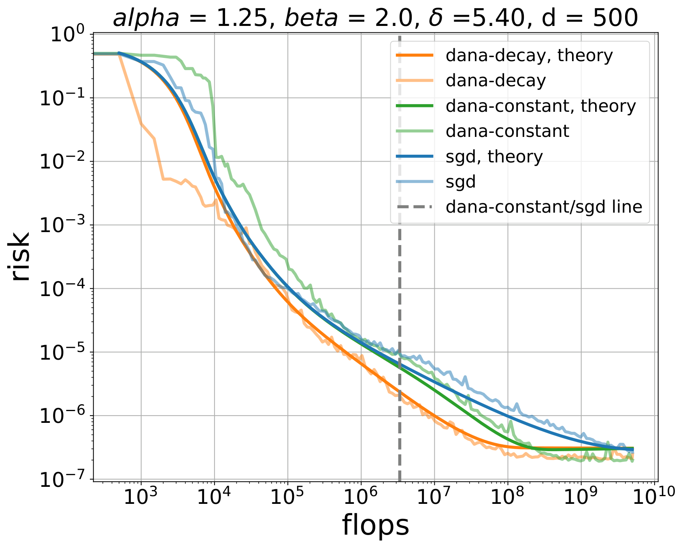
5 Momentum Theory on the Power-Law Random Features Model
5.1 The controlled comparison
We use exactly the setting of Module 2. In the notes convention,
\[ X_j=j^{-\alpha/2}Z_j, \qquad \operatorname{Var}(X_j)=j^{-\alpha}, \qquad b_j=j^{-\beta}. \]
A Gaussian feature map \(W\in\mathbb R^{v\times d}\) produces the quadratic population loss
\[ \mathcal L(\theta) =\left\|\Sigma^{1/2}(W\theta-b)\right\|_2^2, \qquad \widehat K=W^\top\Sigma W. \]
The data geometry, target, feature map, and compute model are held fixed. Only the optimizer changes. This makes PLRF a controlled test of whether an algorithm can alter the four loss contributions derived in Module 2.
The momentum paper writes \(X_j=j^{-\alpha_{\rm paper}}Z_j\). Its covariance eigenvalues decay as \(j^{-2\alpha_{\rm paper}}\). These notes use
\[ \alpha=2\alpha_{\rm paper}. \]
In particular, the paper’s line \(2\alpha_{\rm paper}=1\) is the trace-class boundary \(\alpha=1\) here.
5.2 From momentum to a general Volterra equation
For SGD, Module 2 obtained a convolution Volterra equation: the kernel depended only on the time difference. Scheduled momentum is nonautonomous. Its coefficients change with time, and the resulting kernel remembers both when a noise impulse entered and when its effect is measured.
After continuizing the stochastic recursion, diagonalizing \(\widehat K\), and following one spectral mode \(\lambda\), one obtains a small matrix ODE
\[ \frac{\partial}{\partial t}\Phi_\lambda(t,s) =\Omega(t;\lambda)\Phi_\lambda(t,s), \qquad \Phi_\lambda(s,s)=I. \]
The fundamental solution \(\Phi_\lambda(t,s)\) propagates an impulse from time \(s\) to time \(t\). Integrating these modewise propagators against the same deterministic spectral measures used in Module 2 gives
\[ \mathscr P(t) = \mathscr F(t) + \int_0^t \mathscr K(t,s)\mathscr P(s)\,ds. \]
The forcing \(\mathscr F\) carries the initial target error. The kernel \(\mathscr K(t,s)\) carries stochastic-gradient noise through the scheduled momentum dynamics. The equation is still Volterra—only earlier times influence later ones—but it is generally not a convolution.
SGD has one state variable, the parameter error. Momentum adds at least one state variable, and the second-moment calculation adds their quadratic cross-terms. For each eigenvalue \(\lambda\) of \(\widehat K\), the expected error, momentum, and their covariance therefore evolve as a finite-dimensional linear system with time-dependent coefficients.
This is the useful division of labor:
\[ \begin{array}{c} \text{random matrix theory} \\[-2mm] \downarrow \\[-2mm] \text{deterministic spectral measures} \end{array} \qquad\text{and}\qquad \begin{array}{c} \text{scheduled momentum} \\[-2mm] \downarrow \\[-2mm] \Phi_\lambda(t,s). \end{array} \]
The measures describe which spectral modes exist; the fundamental solution describes how the optimizer moves through them.
5.3 A generalized Kesten reduction
The exact Volterra equation is not yet a scaling law. As in Module 2, the goal is to show that repeated feedback through the kernel does not generate a new leading power beyond the forcing and first kernel contribution.
Lemma 1 (Generalized Kesten Bound) Let \(K(t,s)\geq0\) for \(0\leq s\leq t\). Suppose that for a constant \(C_K\),
\[ \int_r^t K(t,s)K(s,r)\,ds \leq C_K K(t,r) \]
for every \(0\leq r\leq t\). Then the iterated kernels satisfy
\[ K^{*(n+1)}(t,r) \leq C_K^n K(t,r). \]
The proof is an induction: convolve the \(n\)-fold bound with one more copy of \(K\), then apply the assumed two-kernel inequality. If \(C_K<1\), the Volterra series is controlled by a geometric sum. Schematically,
\[ \mathscr P =\mathscr F+K*\mathscr F+K*K*\mathscr F+\cdots \asymp \mathscr F+K*\mathscr F. \]
For a convolution kernel, the Kesten condition can often be reduced to a one-variable tail estimate. For DANA, \(K(t,s)\) depends on both times through solutions of a singular, time-dependent matrix ODE. The proof must:
- find asymptotics of the fundamental solutions in different spectral regimes;
- control the transition between SGD-like and accelerated modes;
- integrate those bounds against the PLRF deterministic spectral measures;
- verify stability and the generalized Kesten condition uniformly.
The long Frobenius and kernel estimates in the source paper perform this work. For the scaling story, the important mechanism is that stability makes the Volterra feedback summable, after which the optimizer-dependent forcing and kernel tails determine the exponents.
5.4 Loss dynamics and the phase diagram
The main theorem has a particularly clean interpretation: momentum does not create a new collection of loss curves. It runs the same \(4+3\) curves on a different clock.
Let
\[ \mathscr P_{\mathrm{alg}}(t;d) = \mathbb E\left[ \left\|\Sigma^{1/2}(W\theta_t-b)\right\|_2^2 \right] \]
denote the expected PLRF population loss after \(t\) optimizer steps with model dimension \(d\). It is useful first to define a reference loss curve in an abstract optimization time \(s\). In the notes convention, its four components are
\[ \begin{aligned} \widehat{\mathscr F}_{pp}(s) &\asymp s^{-(\alpha+2\beta-1)/\alpha}, &&\text{population bias},\\ \mathscr F_0(d) &\asymp d^{-\{\alpha+(1-2\beta)_+\}}, &&\text{capacity floor},\\ \widehat{\mathscr F}_{ac}(s;d) &\asymp d^{-1}s^{-1+1/\alpha}, &&\text{embedding bias},\\ \widehat{\mathscr K}_{pp}(s) &\asymp s^{-2+1/\alpha}, &&\text{stochastic variance}. \end{aligned} \]
Group the three deterministic pieces into
\[ \widehat{\mathscr F}(s;d) = \widehat{\mathscr F}_{pp}(s) \;+\widehat{\mathscr F}_{ac}(s;d) \;+\mathscr F_0(d). \]
These are exactly the four components from Module 2. They generate the same four principal phases and three subphase splits:
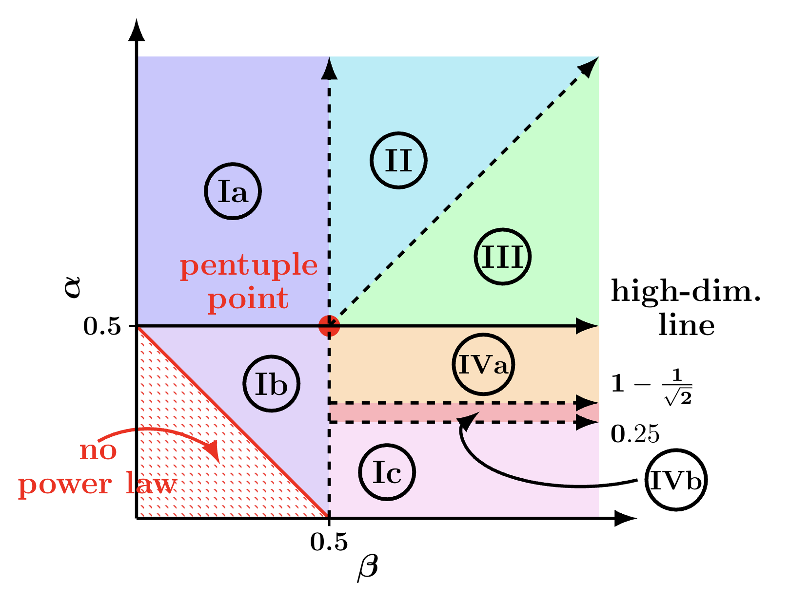
Dominant terms in each region
| phase | active loss components |
|---|---|
| I | \(\widehat{\mathscr F}_{pp}+\mathscr F_0\) |
| II | \(\widehat{\mathscr F}_{pp}+\widehat{\mathscr F}_{ac}+\mathscr F_0\) |
| III | \(\gamma\widehat{\mathscr K}_{pp}+\widehat{\mathscr F}_{ac}+\mathscr F_0\) |
| IV | \(\widehat{\mathscr F}_{pp}+\gamma\widehat{\mathscr K}_{pp}+\mathscr F_0\) |
The diagram uses the paper convention on its vertical axis, \(\alpha_{\rm paper}=\alpha/2\). Its high-dimensional line at \(\alpha_{\rm paper}=1/2\) is therefore the boundary \(\alpha=1\) in these notes. The sublabels Ia–Ic and IVa–IVb refine the compute-optimal balance without changing the active-component grouping in the table.
Theorem 1 (Acceleration Is a Change of Clock) Away from the critical lines, at fixed batch size and for stable hyperparameters, the momentum paper proves the scaling equivalence
\[ \boxed{ \mathscr P_{\mathrm{alg}}(t;d) \asymp \widehat{\mathscr F}(\vartheta_{\mathrm{alg}}(t);d) \;+\gamma\widehat{\mathscr K}_{pp}(\vartheta_{\mathrm{alg}}(t)). } \]
The optimizer enters primarily through one scalar effective time,
\[ \vartheta_{\mathrm{DANA}}(t) = 1+2\gamma_2Bt+ \left(\int_0^t\sqrt{\gamma_3(s)B}\,ds\right)^2. \]
Thus DANA is, at the level of scaling laws, the original PLRF loss curve composed with a faster clock.
The clocks make the comparison immediate:
\[ \begin{aligned} \vartheta_{\mathrm{SGD}}(t) &\asymp 1+\gamma Bt,\\ \vartheta_{\mathrm{SGD-M}}(t) &\asymp 1+\gamma_{\mathrm{eff}}Bt,\\ \vartheta_{\mathrm{DANA\text{-}constant}}(t) &\asymp 1+\gamma_2Bt+\frac{Bt^2}{d},\\ \vartheta_{\mathrm{DANA\text{-}decaying}}(t) &\asymp 1+Bt+Bt^{\,2-1/\alpha}. \end{aligned} \]
Constant momentum changes only the coefficient of a linear clock, so SGD-M has the same scaling exponents as SGD. DANA-constant is linear until \(t\asymp d\) and quadratic afterward. DANA-decaying replaces physical time by \(t^{2-1/\alpha}\) above the high-dimensional line. All of the individual accelerated slopes follow simply by substituting these clocks into the four original curves.
Figure 3 presents this loss decomposition in a representative Phase II problem. The loss begins in a population-bias regime, passes through an embedding-bias regime, and eventually reaches the capacity floor. DANA does not remove or replace these components; composing them with \(\vartheta_{\mathrm{DANA}}(t)\) makes the first two regimes decay more quickly as functions of optimizer steps.
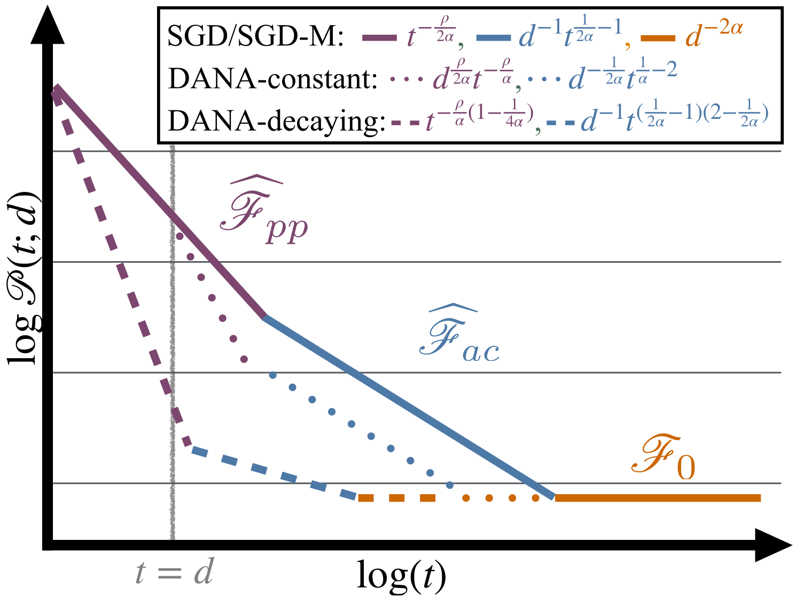
For example, composing with the quadratic DANA-constant clock doubles the time-decay exponent of both \(\mathscr F_{pp}\) and \(\mathscr F_{ac}\) after \(t\asymp d\). Composing with the DANA-decaying clock multiplies both exponents by \(2-1/\alpha\), a factor strictly between one and two when \(\alpha>1\).
This also explains an apparent tension between the two figures. A loss component can have a steeper late-time slope without changing the compute-optimal scaling law. DANA-constant behaves like SGD until roughly \(t=d\). In Phase IIIb the relevant compute-optimal balance is reached at that same transition scale, before the accelerated blue branch has enough room to alter the exponent. DANA-decaying activates acceleration earlier and therefore does outscale SGD there.
Balancing these time-dependent terms against the capacity floor at each point in \((\alpha,\beta)\) produces the actual acceleration phase diagram. The large region above the horizontal line is where scheduled momentum can change the compute-optimal exponent, rather than merely improve a constant prefactor.
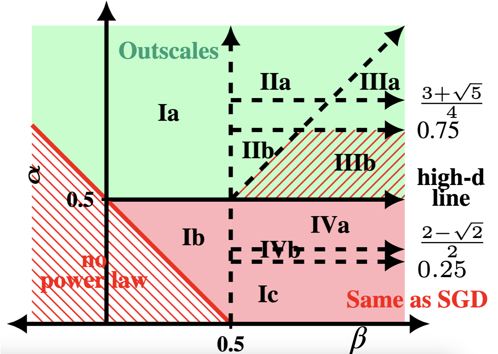
The hatched exception is Phase IIIb, not Phase IIIa. In Phase IIIa, both DANA-constant and DANA-decaying outscale SGD. In Phase IIIb, DANA-constant does not outscale: the compute-optimal balance between stochastic variance and embedding bias occurs around \(t\asymp d\), exactly where constant DANA is only beginning to depart from SGD. DANA-decaying accelerates before that transition and therefore still outscales SGD in Phase IIIb.
The conclusions are:
- SGD with constant momentum has the same scaling exponents as SGD.
- Above the high-dimensional line, \(\alpha>1\), DANA-decaying provably outscales SGD; DANA-constant does so except in Phase IIIb.
- Below that line, \(\alpha\leq1\), these DANA schedules have the same compute-optimal exponent as SGD.
- Whether a different schedule or algorithm can accelerate below the trace-class boundary remains open.
The last point matters empirically. Covariance exponents measured in language data and transformer representations occur on both sides of \(\alpha=1\). The solvable theory therefore identifies a real design mechanism, but it does not yet cover all of the regimes that motivated it.
Can one design and analyze a stochastic momentum schedule that outscales SGD when the covariance is not trace class, \(\alpha\leq1\)? Is the obstacle a limitation of DANA, or of the current proof method?
6 From DANA to an Adaptive Optimizer
Raw DANA is not the optimizer one would normally deploy for a transformer. Transformer layers have heterogeneous gradient scales, and even coordinates within one layer can have very different second moments. AdamW normalizes the first moment by a coordinatewise estimate of the second moment:
\[ \begin{aligned} m_{t+1} &=\beta_{1,t}m_t+(1-\beta_{1,t})g_{t+1},\\ v_{t+1} &=\beta_{2,t}v_t+(1-\beta_{2,t})g_{t+1}^{\odot2},\\ \theta_{t+1} &=(1-\gamma_t\lambda_t)\theta_t -\gamma_t\frac{m_{t+1}}{\sqrt{v_{t+1}}+\varepsilon}. \end{aligned} \]
This coordinatewise normalization is approximately invariant to rescaling a gradient coordinate. It is one reason adaptive optimizers are attractive when different parameter groups do not share a common natural scale (Kingma and Ba 2015; Loshchilov and Hutter 2019).
The practical translation is therefore not “replace AdamW by the PLRF algorithm.” It is:
Put DANA’s growing-memory and damping principles inside an AdamW-like normalized optimizer.
This produces adaptive DANA, or ADANA (Ferbach et al. 2026).
7 Logarithmic-Time Schedules
The central schedule is
\[ 1-\beta_t\asymp\frac{\delta}{t+\delta}. \]
Its memory horizon is proportional to \(t+\delta\). Doubling training time also doubles the scale of history retained by the optimizer. Equivalently, comparable multiplicative eras of training receive comparable attention. This is why the authors call it a logarithmic-time schedule.
The long-memory term is separately damped:
\[ a(t)\asymp(1+t)^{1-\kappa}, \qquad 0<\kappa<1, \]
in the unnormalized accumulator convention. The corresponding normalized coefficient decays as a power of time. Small \(\kappa\) is more aggressive; large \(\kappa\) is more conservative; and \(\kappa=1\) approaches an SGD/AdamW-like scaling regime.
The PLRF theory suggests how such an exponent can arise from the data spectrum, but a transformer has many layers, changing representations, adaptive normalization, finite batches, and nonquadratic loss. In the practical study, \(\kappa\) is therefore treated as a scale-stable hyperparameter to be tested, not as a quantity known exactly from first principles.
8 The Enoki Scaling Experiment
The empirical test uses a controlled decoder-only transformer family called Enoki,1 trained on FineWeb (Penedo et al. 2024). The goal is not to introduce a new frontier architecture. It is to construct a reliable scaling ladder on which optimizer comparisons are interpretable.
1 Enoki is a local project nickname, chosen as a mnemonic for the model’s many thin attention heads. It is not the name of a standard architecture or a widely used public model family.
The main architectural choices are:
- RoPE positional encoding (Su et al. 2024) — where RoPE goes and what it changes;
- QK-LayerNorm applied before RoPE — what it normalizes and why;
- pre-LN attention and MLP blocks — where the normalization goes;
- fixed attention-head dimension \(64\) — why 64-dimensional heads?;
- width and depth increased proportionally — why co-scale them?;
- fan-in initialization for embeddings and ordinary linear maps — how this differs from \(\mu\)P;
- depth-dependent initialization of residual-branch output projections — why scale these weights with depth?;
- no weight tying and no \(z\)-loss — what these omissions mean.
RoPE is applied inside each attention head, after producing and normalizing the queries and keys but before forming attention logits:
\[ h_t \longmapsto (q_t,k_t,v_t) \longmapsto (\operatorname{LN}(q_t),\operatorname{LN}(k_t),v_t) \longmapsto (R_tq_t,R_tk_t,v_t). \]
The attention score between positions \(t\) and \(s\) is therefore
\[ (R_tq_t)^\top(R_sk_s) = q_t^\top R_{s-t}k_s. \]
Each \(R_t\) is block diagonal. On coordinate pair \(\ell\), it is the planar rotation
\[ R_t^{(\ell)} = \begin{pmatrix} \cos(t\omega_\ell)&-\sin(t\omega_\ell)\\ \sin(t\omega_\ell)& \cos(t\omega_\ell) \end{pmatrix}. \]
This is how absolute positions enter the query and key embeddings while their inner product depends on relative displacement \(s-t\) (Su et al. 2024). Values are not rotated in the standard construction.
Empirically, RoPE leaves the measured attention and representation geometry largely unchanged while improving token efficiency, providing evidence that it acts primarily as an optimization accelerator rather than changing which representations are ultimately learned (Liu et al. 2026).
For one attention head, first form the usual query, key, and value projections,
\[ q_t=W_Qh_t,\qquad k_t=W_Kh_t,\qquad v_t=W_Vh_t. \]
QK-LayerNorm applies a separate LayerNorm along the head dimension to each query and key vector:
\[ \widehat q_t=\operatorname{LN}_Q(q_t), \qquad \widehat k_t=\operatorname{LN}_K(k_t). \]
Enoki then applies RoPE to these normalized vectors and computes
\[ z_{ts} = \frac{(R_t\widehat q_t)^\top(R_s\widehat k_s)} {\sqrt{d_{\mathrm{head}}}}, \qquad A_{ts}=\operatorname{softmax}_s(z_{ts}). \]
Thus the order is
\[ h_t \longmapsto (q_t,k_t,v_t) \longmapsto (\widehat q_t,\widehat k_t,v_t) \longmapsto (R_t\widehat q_t,R_t\widehat k_t,v_t). \]
LayerNorm fixes the coordinate mean and variance of each query and key, up to its learned affine parameters. Consequently, their norms cannot grow freely during training. It does not fix their directions: attention can still learn which queries align with which keys.
Why is this useful? Without QK-LayerNorm, an attention logit
\[ z_{ts}=\frac{\langle q_t,k_s\rangle}{\sqrt{d_{\mathrm{head}}}} \]
can become large simply because both \(\lVert q_t\rVert\) and \(\lVert k_s\rVert\) grow. The logit depends on both factors and can therefore grow roughly quadratically with their common scale. Softmax then becomes nearly one-hot—often called attention-entropy collapse—and training can diverge. QK-LayerNorm removes this radial route to large logits, leaving the attention score controlled primarily by query–key alignment (Dehghani et al. 2023; Wortsman et al. 2024).
The small-scale-proxies study reproduces the same failure in small models by raising the learning rate. Without QK-LayerNorm, the learning rate at which training diverges decreases as model size grows; with it, models tolerate much larger learning rates and exhibit substantially lower learning-rate sensitivity, although sensitivity does not disappear completely (Wortsman et al. 2024). This is the most relevant argument for including it in a scaling experiment: it widens the stable optimization range and makes an optimizer comparison less likely to be confounded by attention-logit blow-up.
QK-LayerNorm was used throughout the Enoki experiments, so there is no controlled Enoki ablation that isolates its contribution. The defensible claim is that it removes one known radial route to attention-logit growth. It remains an open question whether its benefits here should be attributed principally to controlling query–key covariance, softmax saturation, attention sinks, or several of these effects at once.
“Pre-LN” specifies where LayerNorm sits relative to a transformer sublayer and its residual connection. If \(\mathcal A\) is attention and \(\mathcal M\) is the MLP, an Enoki block has the form
\[ \begin{aligned} u_\ell &= x_\ell+\mathcal A_\ell\!\left(\operatorname{LN}_{\ell,1}(x_\ell)\right),\\ x_{\ell+1} &= u_\ell+\mathcal M_\ell\!\left(\operatorname{LN}_{\ell,2}(u_\ell)\right). \end{aligned} \]
The normalization is before the attention or MLP transformation—hence pre-LN. The residual stream itself retains a direct identity path. A final LayerNorm is ordinarily applied after the last transformer block.
The original Transformer instead used Post-LN:
\[ \begin{aligned} u_\ell &= \operatorname{LN}_{\ell,1} \!\left(x_\ell+\mathcal A_\ell(x_\ell)\right),\\ x_{\ell+1} &= \operatorname{LN}_{\ell,2} \!\left(u_\ell+\mathcal M_\ell(u_\ell)\right). \end{aligned} \]
Here every residual route passes through a normalization operation. The two arrangements contain nearly the same components, but their optimization geometry is different.
Xiong et al. (2020) used a mean-field calculation to explain that difference. At initialization, Post-LN can produce large gradients in parameters near the output of a deep transformer. A large learning rate can therefore make early training unstable, and learning-rate warmup protects the model while those gradient scales settle. For Pre-LN, gradients are much better behaved at initialization because the residual stream supplies an unnormalized identity route through the depth of the network.
This was a major trainability improvement: in the experiments of Xiong et al. (2020), Pre-LN transformers could remove warmup while reaching results comparable to Post-LN baselines, with less training time and hyperparameter tuning. It should not be read as a claim that Pre-LN always achieves a better final loss. Its practical attraction for Enoki is that it makes a deep scaling ladder easier to optimize consistently, reducing the chance that an optimizer comparison is really detecting a fragile normalization placement.
Pre-LN is separate from QK-LayerNorm. The former normalizes the residual-stream input to the entire attention and MLP branches; the latter additionally normalizes the query and key vectors inside attention before RoPE and the query–key dot product.
The local name Enoki refers to the model’s many thin attention heads. Each head has fixed dimension
\[ d_{\mathrm{head}}=64. \]
When the residual width grows, the number of heads grows with it. A wider model therefore obtains more parallel attention subspaces rather than making each query–key comparison higher-dimensional. For this scaling experiment, that is principally a control choice: it keeps the local geometry of a head approximately fixed while width and depth change, so that an apparent optimizer effect is less likely to be caused by a simultaneous change in the attention mechanism.
There is also an architectural hypothesis behind small heads, but not a settled law. The original Transformer used \(d_{\mathrm{head}}=64\) and motivated multiple heads as a way to attend to different positions and representation subspaces (Vaswani et al. 2017). That suggests allocating additional width to more heads rather than to wider heads. In the other direction, head-pruning experiments find that many trained heads can be removed with little loss, which warns against identifying “more heads” with “more useful independent features” (Michel et al. 2019). A convincing theory and controlled empirical account of how head dimension itself should scale is still missing.
8.1 What public model families actually do
The table separates query heads from key/value heads. This matters for grouped-query attention (GQA): reducing the number of KV heads saves KV-cache memory, but does not make the query heads narrower.
| Family | Parameters (active / total) | Depth \(L\) | Residual width \(W\) | \(L/W\) | Query heads | KV heads | Head dimension |
|---|---|---|---|---|---|---|---|
| NanoDO default (Liu et al. 2024) | configuration-dependent | 6 | 512 | 0.0117 | 8 | 8 | 64 |
| GPT-2 (Radford et al. 2019) | 124M | 12 | 768 | 0.0156 | 12 | 12 | 64 |
| 355M | 24 | 1,024 | 0.0234 | 16 | 16 | 64 | |
| 774M | 36 | 1,280 | 0.0281 | 20 | 20 | 64 | |
| 1.5B | 48 | 1,600 | 0.0300 | 25 | 25 | 64 | |
| Llama 2 (Touvron et al. 2023) | 7B | 32 | 4,096 | 0.0078 | 32 | 32 | 128 |
| 13B | 40 | 5,120 | 0.0078 | 40 | 40 | 128 | |
| 70B | 80 | 8,192 | 0.0098 | 64 | 8 | 128 | |
| Llama 4 Scout (Meta AI 2025) | 17B / 109B | 48 | 5,120 | 0.0094 | 40 | 8 | 128 |
| Llama 4 Maverick | 17B / 400B | 48 | 5,120 | 0.0094 | 40 | 8 | 128 |
| Qwen2 (Yang et al. 2024) | 0.5B | 24 | 896 | 0.0268 | 14 | 2 | 64 |
| 1.5B | 28 | 1,536 | 0.0182 | 12 | 2 | 128 | |
| 7B | 28 | 3,584 | 0.0078 | 28 | 4 | 128 | |
| 72B | 80 | 8,192 | 0.0098 | 64 | 8 | 128 |
NanoDO is a research implementation rather than a checkpoint family, so its row reports the public default configuration; its parameter count depends on the chosen vocabulary and other settings. It provides another direct 64-dimensional-head precedent. GPT-2 is the clean released-family precedent for Enoki: residual width and head count grow together while the head dimension remains 64. Llama 2 also grows the number of query heads, but holds their dimension at 128 rather than 64; at 70B it separately adopts GQA. Llama 4 retains 128-dimensional query heads and an 8-head KV interface in both released sizes; its large difference in total parameter count comes from the number of experts, not a wider attention interface. Qwen2 makes one change in head dimension, from 64 in the 0.5B model to 128 in the larger models, and then scales mainly through width, depth, and head count. Thus the public recipes cluster around 64 and 128, but do not imply a universal scaling rule. Nor should the difference between these two nearby conventional choices be treated as a major architectural divide.
8.2 Head dimension is primarily a systems choice
In current practice, head dimension appears to be chosen primarily for lower-level hardware and kernel considerations, rather than from a scaling principle saying that it should grow with model size. This helps explain why public recipes repeatedly use a small set of round dimensions—especially 64 and 128—even as parameter count changes by orders of magnitude.
Holding \(d_{\mathrm{model}}\) fixed and writing \(d_{\mathrm{model}}=H d_{\mathrm{head}}\), redistributing width between the number of heads \(H\) and their dimension does not substantially change the leading arithmetic count for dense attention. It can nevertheless change wall-clock performance. Head dimension determines matrix-tile shapes, parallel work per head, the amount of on-chip storage required by a tile, and how effectively kernel overhead is amortized. Larger heads can therefore be faster up to a kernel-, sequence-length-, datatype-, and GPU-dependent size; beyond that point, storage pressure or reduced occupancy can reverse the advantage. Modern fused-attention kernels explicitly optimize common dimensions such as 64 and 128 (Dao et al. 2022).
This makes head dimension look more like a systems parameter than a parameter governed by a known model-scaling law. Both 64 and 128 are ordinary, nearby engineering choices, and there is little reason to expect choosing one instead of the other to be the source of a major performance difference. For Enoki, the important decision is not 64 rather than 128. It is holding the head dimension fixed across the scaling ladder, thereby preserving a common coordinate system for the experiment.
Let \(W=d_{\mathrm{model}}\) denote residual width and \(L\) the number of transformer blocks. Away from embeddings, a conventional dense transformer has parameter count approximately
\[ P \asymp L W^2, \]
because every block contains a fixed number of matrices whose two dimensions scale with \(W\). “Scale width and depth proportionally” means choosing \(L\propto W\). Along such a family,
\[ P\asymp W^3\asymp L^3. \]
Enoki implements this with the number of attention heads \(h\) as its scale coordinate:
\[ d_{\mathrm{head}}=64,\qquad W=64h,\qquad L=\left\lfloor\frac{3h}{4}\right\rfloor,\qquad d_{\mathrm{MLP}}=4W. \]
Its aspect ratio is therefore nearly constant:
\[ \frac{L}{W} \approx \frac{3h/4}{64h} = \frac{3}{256} \approx 0.0117. \]
Thus width, depth, head count, and MLP width all move along one fixed ray in architecture space. This is valuable experimentally: each increase in model size is a larger instance of essentially the same shape, rather than a new choice about whether parameters should be spent on depth or width.
The public configurations in Table 1 provide useful scale for this number. NanoDO’s default also has \(L/W\approx0.0117\); Llama 2 and Llama 4 lie between roughly \(0.0078\) and \(0.0098\); and the GPT-2 ladder ranges from \(0.0156\) to \(0.0300\) (Liu et al. 2024; Touvron et al. 2023; Meta AI 2025; Radford et al. 2019). Qwen2 spans much of the combined range, from \(0.0268\) in its smallest configuration to \(0.0098\) at 72B (Yang et al. 2024). These are not a single universal constant, but they are all small ratios of order \(10^{-2}\). Enoki is therefore using a conventional depth–width aspect ratio while keeping that ratio unusually clean across its entire experimental ladder.
8.3 The proportional limit
There is also a theoretical reason to regard this as the natural direction of travel. Classical infinite-width theory sends \(W\to\infty\) while holding depth \(L\) fixed. In that sequential limit, important interactions between depth and finite width disappear. Joint, or proportional, limits instead send
\[ L,W\longrightarrow\infty \qquad\text{with}\qquad \frac{L}{W}\longrightarrow\rho\in(0,\infty). \]
The depth-to-width ratio then remains visible in the limiting theory. Finite-width corrections accumulate across layers, and their leading size is controlled by an aspect ratio of the form \(L/W\) rather than by width alone (Roberts et al. 2022, 381–82). Thus scaling only width eventually describes a fixed-depth object, while proportional scaling preserves a genuinely deep and wide regime.
See also Chizat’s lectures!
8.4 What does the evidence say?
In practice, most model families scale depth and width together in some approximately proportional fashion. The precise ratio varies across families, as the table above shows, but co-scaling is the standard construction rather than holding either depth or width fixed.
The influential counterpoint is Kaplan et al. (2020). Across the range of shapes they tested, non-embedding parameter count predicted language-model performance surprisingly well, with comparatively weak dependence on how those parameters were divided between depth and width. This cannot hold without limits: extremely shallow, narrow, or otherwise poorly balanced models must eventually be penalized. The empirical claim is that there is a broad central regime in which model shape mattered much less than parameter count—not that every shape with the same parameter count is equivalent.
Shape can also matter for downstream performance and hardware efficiency. For example, Tay et al. (2021) found that some standard T5 shapes were off the compute–performance Pareto frontier and that preferred scaling protocols varied across compute regimes.
CompleteP also revisits model shape under a depth-aware parameterization. It finds that a substantially wider range of width–depth ratios remains compute-efficient, including much deeper models than standard or width-only \(\mu\)P parameterizations favor (Dey et al. 2025). This is a better depth result than simply decomposing the parameter count as \(P\propto LW^2\): the apparent optimum over shapes depends on whether the parameterization gives each depth a fair optimization comparison.
Open question. Why should useful transformer families exhibit even an approximate proportionality between depth and width? Better yet, is there a different joint depth–width scaling limit that organizes model shape, parameterization, feature learning, and hardware efficiency more naturally?
The original maximal-update parameterization, \(\mu\)P, asks how initialization, parameter multipliers, and tensor-wise learning rates should change as width grows so that features continue to move at order one and tuned hyperparameters transfer from a small proxy to a wide model (Yang et al. 2022). In its standard implementation, the base and target models have the same depth.
Table 3 of Yang et al. (2022) does apply to transformers. In fact, Appendix D.5 explicitly allows the Enoki-style width limit in which \(d_{\mathrm{head}}\) stays fixed while the number of heads and \(d_{\mathrm{model}}\) grow. The differences are in the parameterization:
| component | Standard parameterization | Transformer \(\mu\)P | Enoki |
|---|---|---|---|
| ordinary hidden-weight initialization | \(1/\mathrm{fan}_{\mathrm{in}}\) | \(1/\mathrm{fan}_{\mathrm{in}}\) | same fan-in order |
| token-embedding initialization | input-weight rule, \(1/\mathrm{fan}_{\mathrm{in}}\) | same input-weight rule | \(\operatorname{Var}(E)=1/W\) |
| language-model head initialization | \(\operatorname{Var}(W_{\mathrm{lm}})\asymp 1/W\) | \(\operatorname{Var}(W_{\mathrm{lm}})\asymp 1/W^2\) | \(\operatorname{Var}(W_{\mathrm{lm}})=1/W\) |
| Adam learning rate | one width-independent order for every tensor | input tensors: order one; hidden and output tensors: order \(1/W\) | one shared, empirically fitted \(\eta(P)\) at each model scale |
| attention logits | \(q^\top k/\sqrt{d_{\mathrm{head}}}\) | \(q^\top k/d_{\mathrm{head}}\) | \(q^\top k/\sqrt{d_{\mathrm{head}}}\) |
| depth dependence | none | none in Table 3 | residual-output variance \(1/(2\,\mathrm{fan}_{\mathrm{in}}L)\) |
The attention normalization differs by a constant on this particular ladder: Enoki fixes \(d_{\mathrm{head}}=64\), so neither \(1/d_{\mathrm{head}}\) nor \(1/\sqrt{d_{\mathrm{head}}}\) changes with model scale. The consequential departures are the embedding and readout initialization, the use of one learning rate rather than tensor-wise \(\mu\)P rates, and the explicit depth-dependent residual initialization.
Seen against both columns, Enoki is closer to standard parameterization in its widthwise hidden/readout initialization and attention normalization. It is not exactly standard parameterization, however: its embedding rule is width-dependent, its residual-output initialization depends on depth, and its single learning rate is fitted to decrease along the model ladder rather than remaining width-independent.
Tensor Programs V also tested transferring hyperparameters across depth, but did not derive a depth parameterization analogous to Table 3. It found that depth transfer was fragile for post-LN transformers and that the best initialization scale did not transfer reliably with depth, while pre-LN learning-rate transfer worked over the tested range. This is precisely the gap later depth-aware parameterizations try to address.
There is also more empirical freedom than the clean asymptotic recipe might suggest. Everett et al. (2024) trained transformers under four parameterizations and several optimizers. They found hyperparameter transfer under all four parameterizations, not only \(\mu\)P; their per-layer learning-rate prescription for standard parameterization outperformed \(\mu\)P, and the best empirical exponents were often ones that stronger theoretical alignment assumptions would have excluded. Thus not using the canonical \(\mu\)P recipe does not by itself make Enoki’s scaling ladder inconsistent. It means that its initialization and learning-rate scaling must be established empirically as depth and width change together, rather than inherited automatically from a width-only prescription.
Thus Enoki is neither exactly standard parameterization nor \(\mu\)P. It retains fan-in initialization for ordinary hidden maps, adds a GPT-2-style depth correction to residual outputs, and determines a common learning-rate scaling empirically along its joint width–depth ladder.
The more relevant extension for depth is CompleteP (Dey et al. 2025). It writes a residual update schematically as
\[ h_{\ell+1}=h_\ell+L^{-\alpha}F_\ell(h_\ell) \]
and compares depth-aware parameterizations as \(L\) changes. Its central point is that hyperparameter transfer is not enough: a parameterization can transfer well while becoming lazy, so that deeper layers learn features close to their linearization. CompleteP takes \(\alpha=1\) and couples this residual scaling to prescriptions for learning rates, weight decay, and AdamW \(\epsilon\). In the paper’s analysis and experiments, this is the choice that achieves both reliable depthwise hyperparameter transfer and non-lazy feature learning in every layer.
This is useful context rather than a description of Enoki’s parameterization. Enoki’s depth-dependent residual initialization is not the full CompleteP recipe: it does not apply CompleteP’s forward multipliers and optimizer scaling rules. Classical \(\mu\)P, CompleteP, and Enoki’s proportional model ladder therefore answer related but distinct questions: widthwise transfer, depthwise transfer and feature learning, and the architectural path along which the scaling experiment is run.
Each transformer layer adds two new contributions to the residual stream:
\[ x_{\ell+\frac12} =x_\ell+A_\ell(\operatorname{LN}(x_\ell)), \qquad x_{\ell+1} =x_{\ell+\frac12}+M_\ell(\operatorname{LN}(x_{\ell+\frac12})). \]
If the \(2L\) contributions have comparable, weakly correlated variance, their sum grows like \(2L\). Scaling the standard deviation of the weights that produce each contribution by \(1/\sqrt{2L}\) keeps the accumulated residual variance of order one. Only the projections that write back to the residual stream—the attention output and MLP output projections—receive this factor. It is an initialization rule, not a multiplier in the forward equations.
Enoki combines that argument with fan-in initialization:
\[ \operatorname{Std}(W_{\mathrm{out}}) =\frac{1}{\sqrt{2L\,\mathrm{fan}_{\mathrm{in}}}}, \qquad \operatorname{Std}(W_{\mathrm{ordinary}}) =\frac{1}{\sqrt{\mathrm{fan}_{\mathrm{in}}}}. \]
This is the fan-in version of the modified initialization described in GPT-2, which scales residual-layer weights by \(1/\sqrt{N}\) when there are \(N\) residual layers (Radford et al. 2019). The widely used nanoGPT implementation makes the convention explicit by reinitializing its two c_proj weights per block with standard deviation \(0.02/\sqrt{2L}\).
The convention is not universal. The public NanoDO default applies the same Xavier-uniform kernel initializer to its attention and MLP projections, with no special depth factor (Liu et al. 2024). For Llama, Meta’s public reference repository contains inference modules whose initialization callbacks are no-ops because pretrained weights are loaded. Neither that code nor the Llama papers establishes that the GPT-2 residual-initialization rule was used during pretraining, so we should not attribute this choice to Llama.
Weight tying identifies the token-embedding matrix with the output classifier:
\[ E_{\mathrm{in}}=E_{\mathrm{out}}. \]
It saves roughly \(VW\) parameters and can act as a useful structural regularizer (Press and Wolf 2017). Enoki leaves the two matrices independent. Consequently, its total parameter count includes both embedding tables, \(2VW\), and input and output token representations are free to learn different geometries.
The ordinary cross-entropy depends on output logits \(y_i\) only through
\[ p_i=\frac{e^{y_i}}{Z}, \qquad Z=\sum_j e^{y_j}. \]
It is invariant to shifting every logit by the same constant. The logits can therefore drift together without changing the predicted probabilities. \(z\)-loss removes this unconstrained direction by adding
\[ \lambda_z(\log Z)^2 \]
to the training objective. It was introduced as a guard against output-logit divergence in large language models (Chowdhery et al. 2023).
Wortsman et al. (2024) reproduced this failure in small transformers by using large learning rates. In their experiments, the logits drifted very negative toward the end of training; \(z\)-loss repaired the instability across scales, while weight decay also mitigated it for the larger models they tested. This is a useful warning about interpreting Enoki’s choice: Enoki did not use \(z\)-loss and did not encounter a failure that required it in the measured regime, but that is not evidence that the term is unnecessary at smaller models with more aggressive learning rates, or at scales beyond the Enoki ladder. The onset depends jointly on scale, learning rate, weight decay, and training duration.
Training uses sequence length \(2048\), global batch \(32\) sequences, and therefore \(65{,}536\) tokens per iteration. The models follow a Chinchilla-style allocation \(N=20D\), where \(D\) includes embedding parameters. Peak learning rates are scaled separately for every optimizer.
An optimizer cannot be evaluated at scale until the architecture, initialization, learning-rate rule, normalization, compute accounting, and baseline have themselves been made to scale. A failure in any one of these can look like an optimizer-dependent exponent.
9 Measuring Compute Efficiency
For an optimizer \(B\) trained with compute \(C_B\), let \(C_A\) be the compute that a baseline \(A\) needs to reach the same loss. The compute multiplier is
\[ \frac{C_A}{C_B}, \]
and the relative compute saving is
\[ \frac{C_A-C_B}{C_B}. \]
In practice, \(C_A\) is obtained by interpolating the baseline’s measured loss-compute curve. This metric is useful even when neither curve has a trustworthy asymptotic power-law fit.
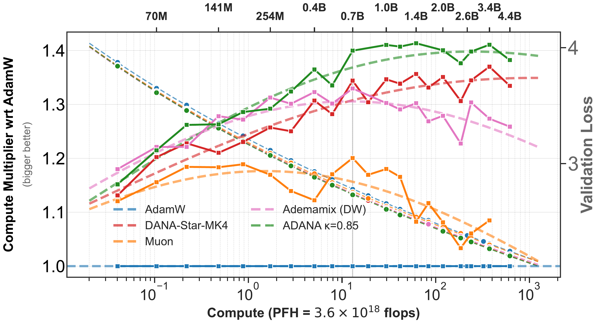
With the reported tuning, ADANA reaches compute improvements of order \(30\%\)–\(40\%\) against the corresponding AdamW baselines at the largest displayed scales. The exact percentage depends on whether AdamW itself receives the improved weight-decay schedule. The growth of the advantage over part of the ladder is empirical evidence of finite-range outscaling. What it does not yet prove is that one exponent continues unchanged beyond the observed break.
10 Lessons From Transporting an Algorithm
10.1 Every control is part of the experiment
Architecture, initialization, normalization, learning-rate scaling, moment schedules, weight decay, batch size, and the compute horizon are not background details. Every item in this list can change the scale of the activations and gradients, the effective gradient noise, or the number of useful optimization steps. They also interact, so a scaling result is a statement about the full training prescription rather than the optimizer in isolation. Controlled ablations are what separate the contribution of one component from the others.
10.2 Loss fits and compute conventions are not standardized
Even the functional form of a scaling law is a modeling choice. Early language model scaling work emphasized pure power laws such as \(L(C)=eC^{-f}\) (Kaplan et al. 2020). The Chinchilla analysis instead fitted a joint law with an irreducible loss floor, \(L(N,D)=E+A N^{-\alpha}+B D^{-\beta}\) (Hoffmann et al. 2022). Smoothly broken power laws were developed to describe crossovers between scaling regimes (Caballero et al. 2023), while the Enoki comparison uses the particularly simple two-power surrogate \(L(C)=a+bC^{-c}+eC^{-f}\) (Ferbach et al. 2026). Thus three commonly encountered compute-loss fits are
\[ L(C)=eC^{-f}, \qquad L(C)=a+eC^{-f}, \qquad\text{or}\qquad L(C)=a+bC^{-c}+eC^{-f}. \]
The horizontal coordinate is a choice as well. For a transformer with \(n_{\rm layer}\) layers, width \(n_{\rm embd}\), vocabulary size \(n_{\rm vocab}\), and sequence length \(n_{\rm seq}\), commonly used FLOP-per-token approximations are
\[ \begin{aligned} 6P &= 72n_{\rm layer}n_{\rm embd}^2, &&\text{non-embedding count (Kaplan)},\\ 6N &= 72n_{\rm layer}n_{\rm embd}^2+6n_{\rm vocab}n_{\rm embd}, &&\text{including embeddings (Chinchilla)},\\ M &= 72n_{\rm layer}n_{\rm embd}^2 {}+12n_{\rm layer}n_{\rm embd}n_{\rm seq}, &&\text{including attention cost (DeepSeek)}. \end{aligned} \]
These conventions follow Kaplan et al. (2020), Hoffmann et al. (2022), and DeepSeek-AI (2024), respectively. Each count is multiplied by the number of training tokens to obtain total compute.
Residuals reveal why both choices matter. Random scatter around zero is consistent with an adequate fit; a coherent arc means that the fitted curve has left systematic scale dependence unexplained. A high \(R^2\) alone does not rule out this misspecification.
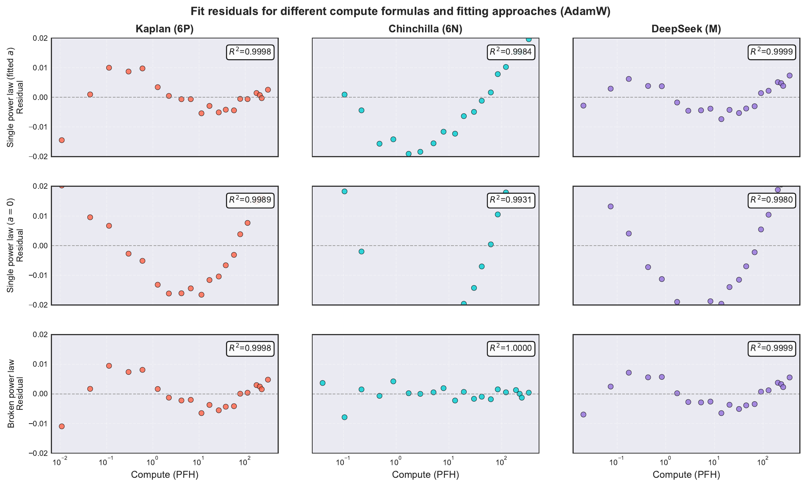
Changing the loss law or the compute coordinate can therefore change the fitted exponent. An outscaling claim is not meaningful unless it states both conventions and checks the residuals.
10.3 Small and large models can occupy different regimes
On the measured ladder, sub-billion-parameter and larger models do not lie cleanly on one power law. A broken law,
\[ L(C)=a+bC^{-c}+eC^{-f}, \]
fits much better. Moreover, the large-compute exponents fitted for AdamW, ADANA, Muon, and Ademamix are very similar. The visible improvement is real, and its initial growth with scale is evidence that the PLRF design mechanism survives in transformers. The unresolved fact is that this growth stops after the common break.
This is exactly the warning from Module 2: finite-scale loss is a competition among terms. A method can appear to outscale over one range and saturate when another term takes over.
The bend near the billion-parameter scale appears across AdamW, ADANA, Muon, and Ademamix. That common location makes a purely optimizer-specific explanation unlikely. It could mark a genuine shared crossover in the learned spectrum, the point at which embedding and attention costs become a different fraction of total compute, or a feature of the experimental protocol: this is also roughly where the ladder moves from directly swept learning rates to learning rates extrapolated from smaller models.
A decisive test would densely re-sweep learning rate and weight decay on both sides of the bend, recompute the horizontal axis using measured FLOPs, and compare activation and gradient spectra across the same models. Does the bend remain at the same parameter count after those controls?
10.4 Baselining is essential
A weak AdamW baseline makes every new optimizer look good. The baseline must use the same architecture, data, compute convention, and tuning effort. Learning rate and weight decay must be tuned across scales, not copied from one convenient model.
For Enoki, the learning-rate search proceeds in three stages:
- search a coarse powers-of-two grid;
- refine around the best value by multiplicative factors such as \(1.25\);
- retain several strong values at every scale and fit a saturated law
\[ \gamma_\star(P)=a(b+P)^{-d}, \]
where \(P\) is the non-embedding parameter count.
The saturation offset \(b\) matters because small models often do not yet lie in the same scaling regime as large ones.
The effect of a learning-rate error can be measured from the sweep itself. Near the optimum, fit
\[ L(\log\gamma) \approx L_\star+\zeta\bigl(\log\gamma-\log\gamma_\star\bigr)^2. \]
Across the AdamW ladder, the measured mean curvature is \(\bar\zeta=1.93\times 10^{-2}\) with standard deviation \(3.5\times 10^{-3}\). A multiplicative learning-rate error \(q\) therefore costs approximately
\[ \Delta L\approx \bar\zeta(\log q)^2. \]
For \(q=1.5\) this is about \(0.00317\) nats; for a factor-of-two miss it is about \(0.00927\) nats. At the 2.4B-parameter Enoki point, where the validation loss is about \(2.51\), these are only about \(0.13\%\) and \(0.37\%\) of the total loss, respectively.
Use the local AdamW loss–compute law
\[ L(C)=a+bC^{-s}. \]
Its log-compute slope is
\[ \left|\frac{dL}{d\log C}\right|=s(L-a). \]
At the 2.4B Enoki scale, the fitted values \(L\approx2.51\), \(a\approx0.20\), and \(s\approx0.043\) give \(s(L-a)\approx0.099\) nats. Thus a loss penalty \(\Delta L\) corresponds locally to
\[ \Delta\log C \approx \frac{\Delta L}{s(L-a)}. \]
Equivalently, inverting the fitted power law gives the compute multiplier
\[ \frac{C_{\rm miss}}{C_{\rm tuned}} = \left( \frac{L-a}{L-a-\Delta L} \right)^{1/s}. \]
| learning-rate factor \(q\) | loss penalty \(\Delta L\) | relative loss penalty | implied compute penalty |
|---|---|---|---|
| \(1.5\) | \(0.00317\) nats | \(0.13\%\) | \(3.2\%\) |
| \(2\) | \(0.00927\) nats | \(0.37\%\) | \(9.8\%\) |
So a \(50\%\) learning-rate miss can make a perfectly tuned comparator appear about \(3\%\) more compute-efficient against that baseline. This is detectable, but it is small beside the reported \(30\%\)–\(40\%\) gains. A factor-of-two miss is more serious, at roughly \(10\%\).
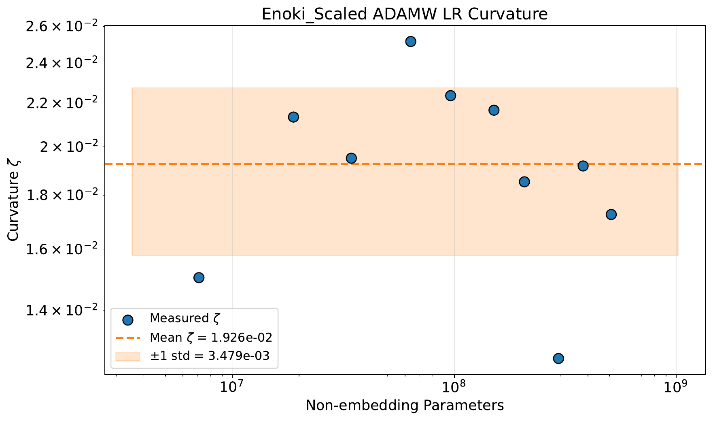
10.5 Weight decay needs the right clock
Constant decoupled weight decay applies one time scale throughout training. The comparison fixes a dimensionless coefficient \(\omega\) and contrasts
\[ \lambda_{\rm const}(t)=\frac{\omega}{T}, \qquad \lambda_{\log}(t)=\frac{\omega}{T/10+t}. \]
Here \(T\) is the planned training horizon. The constant rule has the correct overall scale but distributes the same shrinkage rate across training; the logarithmic rule is stronger early and satisfies \(\lambda_{\log}(t)\asymp t^{-1}\) late. Weight decay and momentum therefore evolve on compatible logarithmic clocks.
The particular offset \(T/10\) is a finite-scale regularization of that clock, not the principle itself. Write the more general family as
\[ \lambda_{\Omega}(t) =\frac{\omega}{T/\Omega+t}, \qquad \Omega\in\{10,100,1000,\infty\}, \]
where \(\Omega=\infty\) denotes the pure \(\omega/t\) clock. At the smallest scales, removing the offset carries a visible penalty, especially for ADANA. That penalty closes as scale grows, while the fitted large-scale trend begins to favor the pure clock. Thus \(T/10\) is useful protection against a short-run transient, but it is not evidently needed in the large-scale regime.
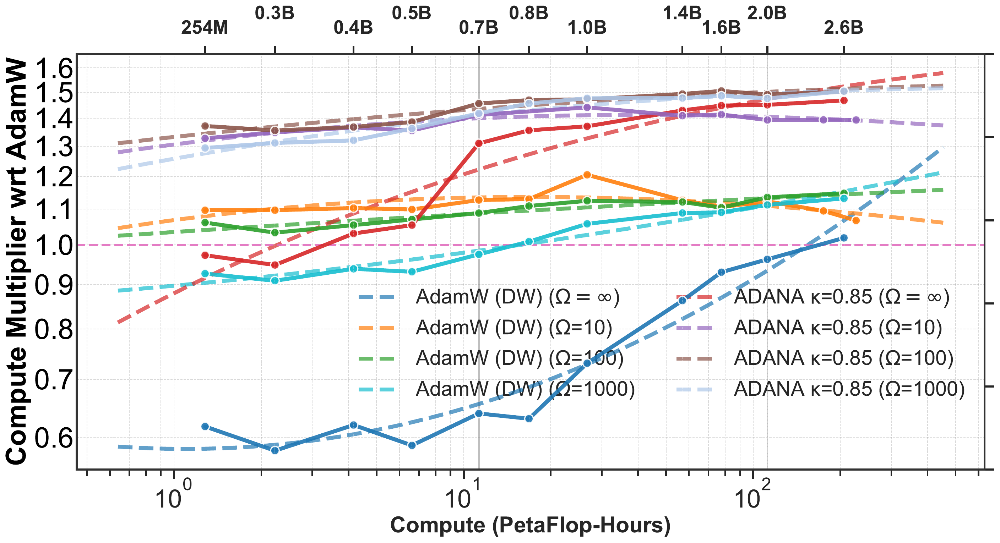
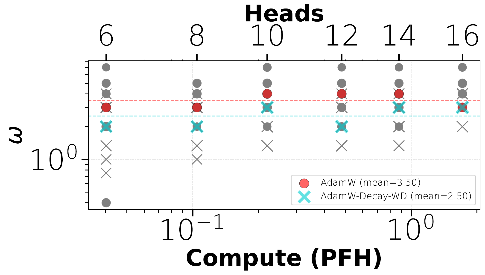
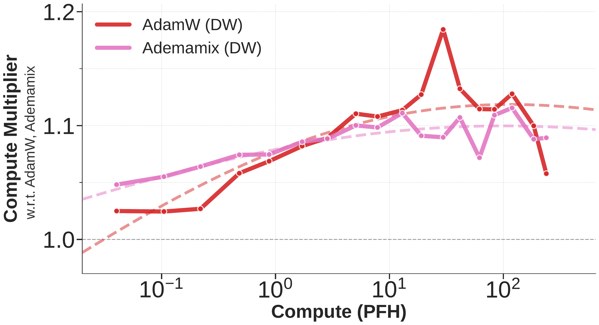
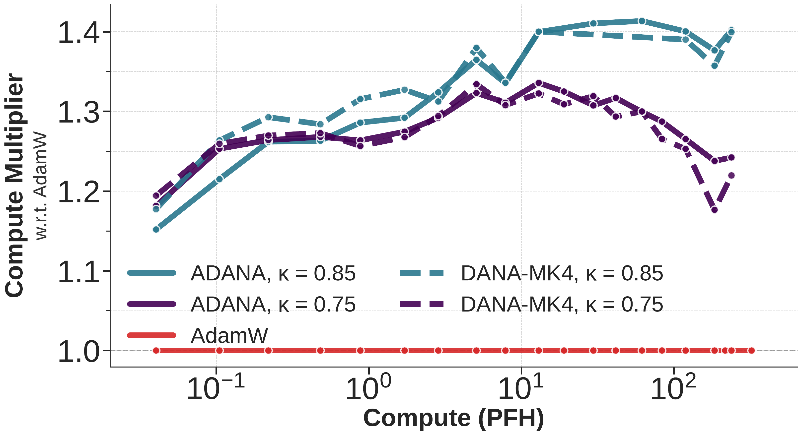
One possible interpretation returns to power-law features. If progressively rarer directions require multiplicatively longer training times, the regularizer that selects among those directions may also need to distribute its influence over logarithmic time. This is a hypothesis, not yet a theorem.
10.6 Scaling is different from tuning
The best configuration at small scale need not be the configuration whose advantage grows with scale. Conversely, an improvement that is visible at moderate scale can wash out after sufficiently long training. Hyperparameters that do not transfer unchanged need their own scaling rules.
The damping exponent illustrates the point. More aggressive values can look strong early and degrade later; more conservative values can improve as scale increases.
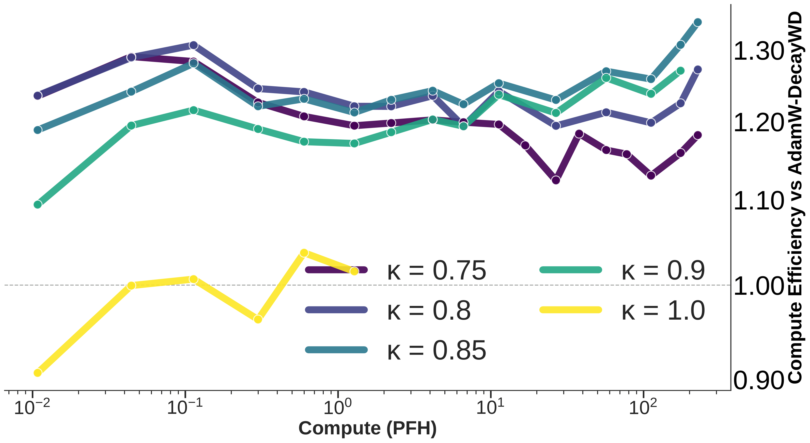
11 The Batch-Size Question
The theory and main transformer experiments emphasize small batches. At large batch, stochastic noise shrinks, so the need for damping should weaken and the method should approach classical full-gradient Nesterov acceleration. A complete optimizer should interpolate between these limits:
\[ \begin{array}{ccc} \text{small batch} &\longrightarrow& \text{large batch}\\ \text{strong stochastic damping} && \text{classical Nesterov}. \end{array} \]
The current experiments show that ADANA can remain useful at larger batches after batch-dependent retuning, but there is not yet a complete theory or universal transfer rule.
How should the DANA damping coefficient depend jointly on covariance exponent, model dimension, batch size, and training horizon so that the algorithm interpolates optimally between small-batch stochastic training and full-batch Nesterov acceleration?
12 What the Experiment Does and Does Not Show
The PLRF result and transformer result answer different questions.
In the solvable model:
- constant momentum does not change the exponent;
- scheduled, dimension-adapted momentum can change it;
- the mechanism is visible through spectral ODEs and a generalized Volterra equation.
In transformer training:
- logarithmic-time momentum and weight-decay schedules can save substantial compute against a tuned AdamW baseline;
- the gains grow over part of the scaling ladder, providing evidence of finite-range outscaling;
- the measured loss is better described by a broken power law;
- after the break, the gains stop growing and the fitted large-scale exponents of several optimizers are close.
The PLRF model proves that dimension-adapted momentum outscales SGD when \(\alpha>1\). The transformer experiments do more than show a constant-factor gain: the same design ideas produce real improvements whose advantage grows over a substantial finite range. The honest uncertainty begins at the power-law break, where that growth stops.
Two questions remain open:
- What causes the break: a correctable feature of the setup or a fundamental change of scaling regime?
- Why do the optimizer gains stop growing there? In particular, many transformer spectral measurements suggest effective exponents on the shallower side, \(\alpha\leq1\), whereas the proved DANA outscaling mechanism requires \(\alpha>1\). Can one design an acceleration strategy that works robustly on both sides of the \(\alpha=1\) boundary?
13 What To Keep
- Outscaling means changing a compute exponent, not only improving a constant.
- Constant momentum has a fixed memory horizon and does not outscale SGD on PLRF.
- Nesterov momentum has a horizon that grows with time.
- Stochastic long memory accumulates noise, so acceleration requires damping.
- DANA uses dimension- or time-adapted damping and provably outscales SGD in part of the trace-class PLRF phase diagram.
- Scheduled momentum produces a general, non-convolution Volterra equation; a generalized Kesten bound reduces it to forcing and kernel asymptotics.
- ADANA transports logarithmic-time memory into an adaptive optimizer.
- Careful baselines, compute definitions, residual checks, learning-rate scaling, and weight-decay schedules are essential.
- The transformer results show finite-range outscaling, followed by an unexplained power-law break; the next problem is to understand that break and design acceleration across both sides of \(\alpha=1\).